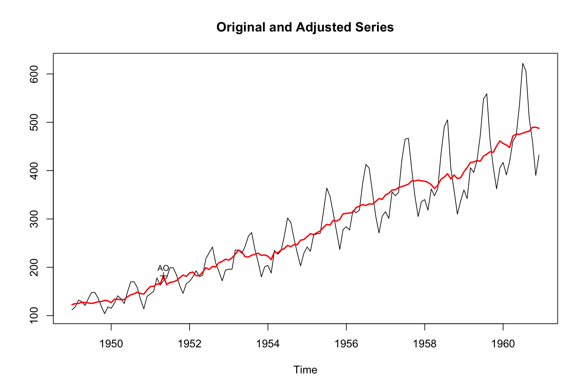
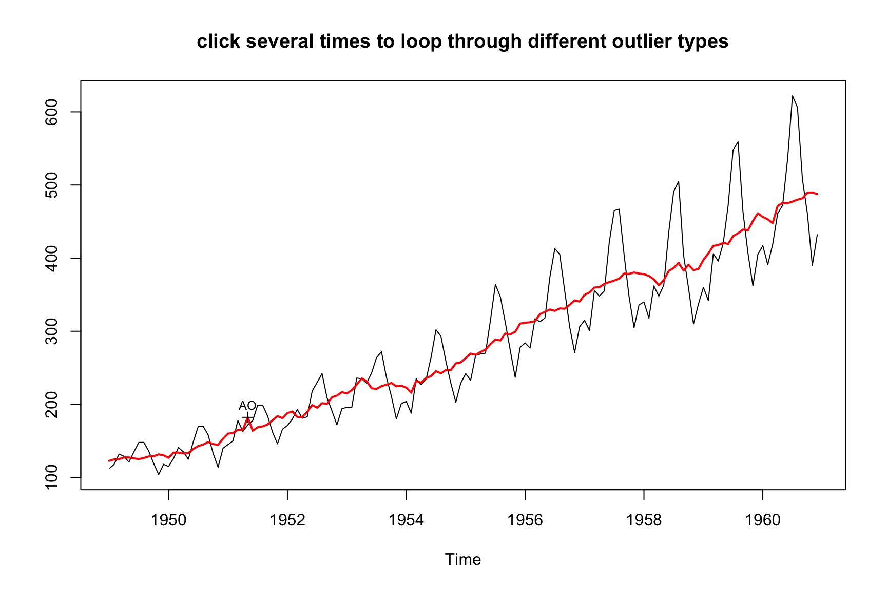

m <- seas(AirPassengers)
summary(m)
#>
#> Call:
#> seas(x = AirPassengers)
#>
#> Coefficients:
#> Estimate Std. Error z value Pr(>|z|)
#> Weekday -0.0029497 0.0005232 -5.638 1.72e-08 ***
#> Easter[1] 0.0177674 0.0071580 2.482 0.0131 *
#> AO1951.May 0.1001558 0.0204387 4.900 9.57e-07 ***
#> MA-Nonseasonal-01 0.1156204 0.0858588 1.347 0.1781
#> MA-Seasonal-12 0.4973600 0.0774677 6.420 1.36e-10 ***
#> ---
#> Signif. codes: 0 '***' 0.001 '**' 0.01 '*' 0.05 '.' 0.1 ' ' 1
#>
#> SEATS adj. ARIMA: (0 1 1)(0 1 1) Obs.: 144 Transform: log
#> AICc: 947.3, BIC: 963.9 QS (no seasonality in final): 0
#> Box-Ljung (no autocorr.): 26.65 Shapiro (normality): 0.990810 Outliers
10.1 Introduction
Exceptional data values, or outliers, constitute a problem both for the ARIMA model building as well as for the seasonal filtering. When analyzing time series data, outlier values are common. In some cases, these issues can be linked to actual events in the real world, such as:
- the COVID-19 pandemic
- the 2008/09 financial market crash
- Natural disasters
- Ukraine crisis
These events can impact the accuracy of seasonal adjustment. As a result, X-13 tries to remove these inconsistencies before performing seasonal adjustment.
For example, when running seas() on AirPassengers with default settings, X-13 detects an additive outlier in may 1951. This additive outlier is removed in the regARIMA part but will be readded to the final, seasonally adjusted series.
The plot() method highlights the outlier values and marks them accordingly:
plot(m)
The default settings discovered a single, additive outlier. By default, X-13 uses a formula that interpolates critical values for numbers of observations between 3 and 99 (Table 7.22 in the Manual). For standard time series, this results in a critical value around 4.
Using the outlier.critical argument, we can fine tune the detection prosses. With outlier.critical = 3, we set a lower bar for the detection of outliers. outlier.critical is the z-value of a particular value that is needed to be classified as an outlier. A value of three means that the z-value must be 3 or larger.
m_high <- seas(AirPassengers, outlier.critical = 3)
summary(m_high)
#>
#> Call:
#> seas(x = AirPassengers, outlier.critical = 3)
#>
#> Coefficients:
#> Estimate Std. Error z value Pr(>|z|)
#> Weekday -0.0027692 0.0004187 -6.613 3.76e-11 ***
#> Easter[1] 0.0140649 0.0058438 2.407 0.016092 *
#> AO1950.Jan -0.0629435 0.0174523 -3.607 0.000310 ***
#> AO1951.May 0.1081042 0.0165482 6.533 6.46e-11 ***
#> LS1953.Jun -0.0755237 0.0228402 -3.307 0.000944 ***
#> AO1954.Feb -0.0693534 0.0160240 -4.328 1.50e-05 ***
#> LS1960.Apr 0.0847557 0.0272119 3.115 0.001842 **
#> MA-Seasonal-12 0.4967116 0.0749535 6.627 3.43e-11 ***
#> ---
#> Signif. codes: 0 '***' 0.001 '**' 0.01 '*' 0.05 '.' 0.1 ' ' 1
#>
#> SEATS adj. ARIMA: (0 1 0)(0 1 1) Obs.: 144 Transform: log
#> AICc: 910.7, BIC: 935.1 QS (no seasonality in final): 0
#> Box-Ljung (no autocorr.): 29.07 Shapiro (normality): 0.9911
#> Messages generated by X-13:
#> Warnings:
#> - At least one visually significant trading day peak has been
#> found in one or more of the estimated spectra.With outlier.critical = 3, we see additive outliers in January 1950, May 1951 and February 1954. In addition, we also see level shifts in June 1953 and April 1960. Note that all z-values are larger than 3.
X-13 offers several ways to model outliers. In this chapter, we will focus on two most important types of effects that can occur in time series data: level shifts and additive outliers. By understanding these effects and how to address them, analysts can improve the quality of their analyses and draw more accurate conclusions from the data.
| Argument | Description | Default |
|---|---|---|
outlier.critical |
Sets the value to which the absolute values of the outlier t-statistics are compared to detect outliers. If only one value is given for this argument, then this critical value is used for all types of outliers. If a list of up to three values is given, different values are used for additive outliers, level shift outliers and temporary change outliers. |
Obtained by a modification of the asymptotic formula of Ljung (1993) that interpolates critical values for numbers of observations between 3 and 99. |
outlier.method |
Determines how the program successively adds detected outliers to the model. The choices are
|
"addone". |
outlier.span |
Specifies start and end dates of a span of the time series to be searched for outliers. The start and end dates of the span must both lie within the series. | None. |
outlier.types |
Specifies the types of outliers to detect. The choices are: "ao" (additive outliers), "ls" (level shifts), "tc" (temporary change), "all": (detect all three of the above types simultaneously), and "none" (turn off outlier detection, but not t-statistics for temporary level shifts). |
The default is c("ao", "ls"). |
10.2 Level Shift
The first outlier category we look at are level shifts. Level shifts refers to a sudden and sustained change in the underlying level of a time series. There can be various causes of level shifts in time series data, such as changes in concepts or definitions of the survey population, alterations in the method of data collection, shifts in economic behavior, changes in legislation, etc. Level shifts are a problem for seasonal adjustment because they will distort the estimation of the seasonal factors.
Below is an example of a manually specified level shift:
m_level_shift <- seas(
AirPassengers,
regression.variables = "ls1953.Jun",
outlier = NULL
)
summary(m_level_shift)
#>
#> Call:
#> seas(x = AirPassengers, outlier = NULL, regression.variables = "ls1953.Jun")
#>
#> Coefficients:
#> Estimate Std. Error z value Pr(>|z|)
#> LS1953.Jun -0.0782358 0.0270308 -2.894 0.003800 **
#> Weekday -0.0024659 0.0006125 -4.026 5.67e-05 ***
#> Easter[1] 0.0205837 0.0084022 2.450 0.014294 *
#> MA-Nonseasonal-01 0.3020780 0.0823400 3.669 0.000244 ***
#> MA-Seasonal-12 0.5241174 0.0756816 6.925 4.35e-12 ***
#> ---
#> Signif. codes: 0 '***' 0.001 '**' 0.01 '*' 0.05 '.' 0.1 ' ' 1
#>
#> SEATS adj. ARIMA: (0 1 1)(0 1 1) Obs.: 144 Transform: log
#> AICc: 959.8, BIC: 976.4 QS (no seasonality in final): 0
#> Box-Ljung (no autocorr.): 26.8 Shapiro (normality): 0.9807 *We use the regression.variables argument to manually specify a level-shift. Since we want to deactivate the automated outlier detection from above, we specify outlier = NULL.
Level shifts are a problem for seasonal adjustment because they will distort the estimation of the seasonal factors. Within X-13, the initial trend is calculated by applying a moving average to the series. If there is an abrupt change in the level of the series, the estimates will be distorted. The estimates before the level shift will be underestimated, and those after will be overestimated. As the calculation of the irregular and seasonal components follow on from this initial trend-cycle estimation, they may be distorted as well.
10.3 Additive Outliers
An additive outlier is a data point that falls outside the general pattern of the trend and seasonal component in a time series. Outliers can be caused by random effects, such as an extreme irregular point, or by identifiable factors, such as a strike or bad weather.
Additive outliers pose a significant challenge to seasonal adjustment methods, which rely on moving averages. The crux of the problem lies in the inherent sensitivity of averages to the presence of extreme values or outliers. When unusual data points are included, the average can become unrepresentative of the underlying pattern in the series. Without proper adjustments or allowances for outliers, estimates for all the components in a time series can become distorted. As such, addressing additive outliers is critical to maintaining the integrity of seasonal adjustment techniques and ensuring accurate analyses.
Below is an example of a manually specified additive outlier:
m_additive_outlier <- seas(
AirPassengers,
regression.variables = "ao1954.Feb",
outlier = NULL
)
summary(m_additive_outlier)
#>
#> Call:
#> seas(x = AirPassengers, outlier = NULL, regression.variables = "ao1954.Feb")
#>
#> Coefficients:
#> Estimate Std. Error z value Pr(>|z|)
#> AO1954.Feb -0.0733392 0.0217684 -3.369 0.000754 ***
#> Weekday -0.0026730 0.0005682 -4.705 2.54e-06 ***
#> Easter[1] 0.0222881 0.0079155 2.816 0.004866 **
#> MA-Nonseasonal-01 0.2014840 0.0844582 2.386 0.017051 *
#> MA-Seasonal-12 0.5483430 0.0750706 7.304 2.79e-13 ***
#> ---
#> Signif. codes: 0 '***' 0.001 '**' 0.01 '*' 0.05 '.' 0.1 ' ' 1
#>
#> SEATS adj. ARIMA: (0 1 1)(0 1 1) Obs.: 144 Transform: log
#> AICc: 956.7, BIC: 973.3 QS (no seasonality in final): 0
#> Box-Ljung (no autocorr.): 32.09 Shapiro (normality): 0.9819 .
#> Messages generated by X-13:
#> Warnings:
#> - At least one visually significant trading day peak has been
#> found in one or more of the estimated spectra.Again, we use the regression.variables argument to manually specify an additive outlier. Since we want to deactivate the automated outlier detection from above, we specify outlier = NULL.
10.4 Manually Identifying Outliers
X-13 contains an automated outlier detection procedure that works well in most circumstances and can be used as a starting point. Plotting the series may add additional information on whether outliers should be adjusted or not. The identify() method opens a window that allows you to manually identify outliers. Select or deselect outliers by point and click. To quit and return the call, press ESC. Click several times to loop through different outlier types.
m <- seas(
AirPassengers
)
identify(m)
#>
#> Call:
#> seas(x = AirPassengers)
#>
#> Coefficients:
#> Estimate Std. Error z value Pr(>|z|)
#> Weekday -0.0029497 0.0005232 -5.638 1.72e-08 ***
#> Easter[1] 0.0177674 0.0071580 2.482 0.0131 *
#> AO1951.May 0.1001558 0.0204387 4.900 9.57e-07 ***
#> MA-Nonseasonal-01 0.1156204 0.0858588 1.347 0.1781
#> MA-Seasonal-12 0.4973600 0.0774677 6.420 1.36e-10 ***
#> ---
#> Signif. codes: 0 '***' 0.001 '**' 0.01 '*' 0.05 '.' 0.1 ' ' 1
#>
#> SEATS adj. ARIMA: (0 1 1)(0 1 1) Obs.: 144 Transform: log
#> AICc: 947.3, BIC: 963.9 QS (no seasonality in final): 0
#> Box-Ljung (no autocorr.): 26.65 Shapiro (normality): 0.9908
#> seas(
#> x = AirPassengers,
#> regression.variables = c("td1coef", "easter[1]", "ao1951.May"),
#> arima.model = "(0 1 1)(0 1 1)",
#> regression.aictest = NULL,
#> outlier = NULL,
#> transform.function = "log"
#> )
#>
#> Call:
#> seas(x = AirPassengers)
#>
#> Coefficients:
#> Weekday Easter[1] AO1951.May MA-Nonseasonal-01
#> -0.00295 0.01777 0.10016 0.11562
#> MA-Seasonal-12
#> 0.49736